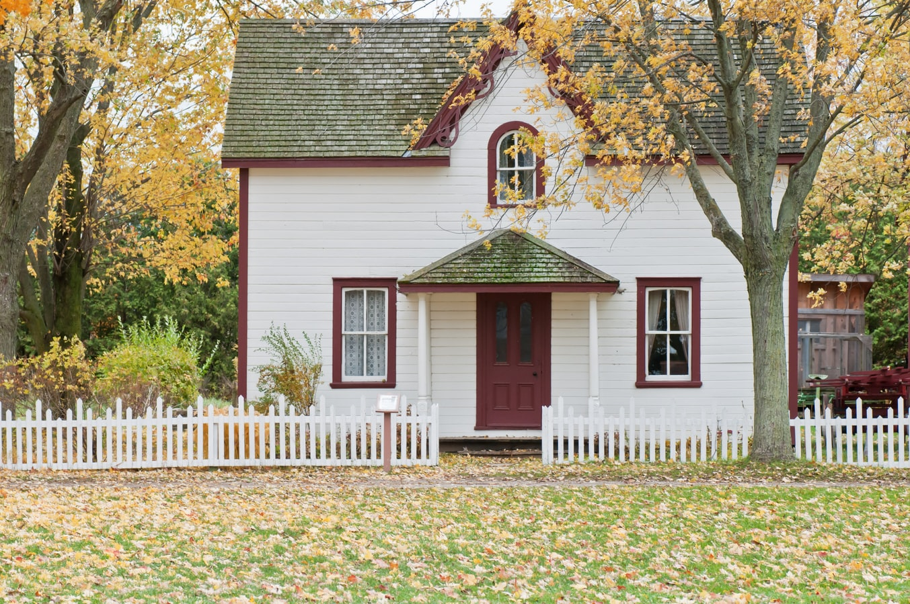

Restaurant Application
Here is a restaurant where customers can book tables online as well as browse the finest recipes available. No sign up required, you may order the following...
- Burgers
- Pizza
- Fish and Chips
And many more...

Cheshire's Cottages
Looking for a house to purchase? look no further than Cheshire's Cottages, we have a wide range of choices available, from family homes, apartments to studios for students. Were sure to find your dream home!, we have the best estate agents around to help you find your journey home. Our services include
- Rent
- Purchase/Sell
- Best houses to fit your budget
And many more...